惊呆了！！白酒竟然这么多潜规则！！
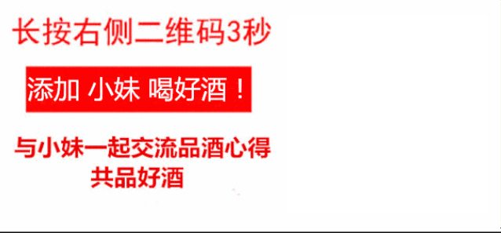

小时候讨厌酒糟的味道
总跌进窖池摔得屁股淤青
而今
天天扎在窖池里
接过爷爷的旗帜
看来
这辈子与茅台镇
注定有一段解不开的缘
我叫小宇，茅台镇人
小时候
祖祖辈辈们都是酿酒师
爷爷用心经营着这个正宗古法酿酒的酒厂
我们的酒厂，不重装修，只重口味
酒客们都是冲着味道寻访而来。
做到现在
爷爷年岁已大
有退隐江湖的想法
我觉得这么好的酒
应该让更多人知道
于是，在外地工作的我回来
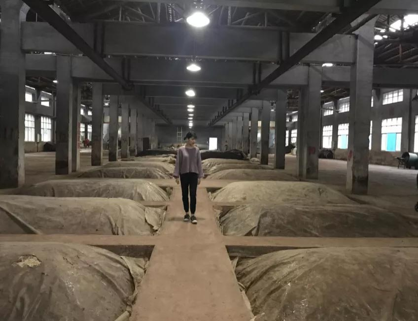
酒糟酒，一直是爷爷为之骄傲的作品
一直到现在
爷爷依然遵循着古法
端午采曲 重阳投料
九次蒸煮 八次发酵 七次取酒
历经一年时间
根据生产工艺
三斤高粱两斤曲才能产一斤白酒
还要存放几年才能勾兑
勾兑又不能加一滴水
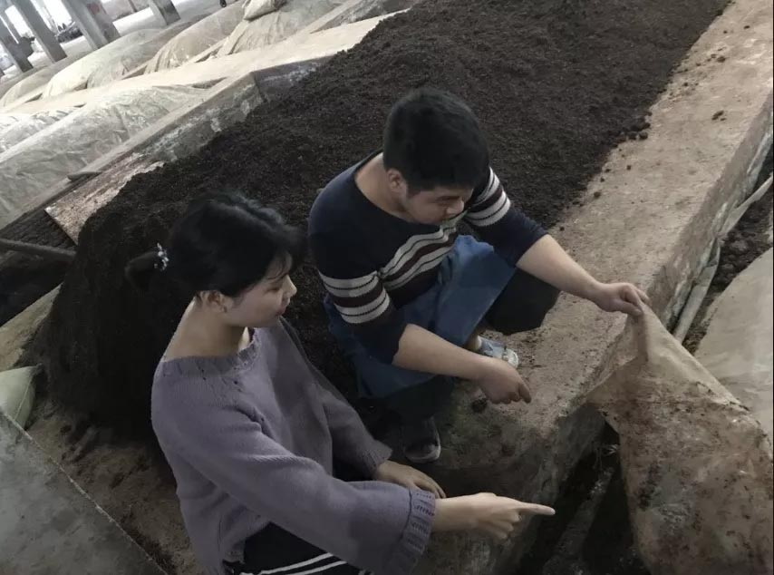
留下的酒糟还会被利用起来
重新放回窖池，埋藏新酿的白酒
——为什么需要埋藏新酒？——
爷爷告诉我，酒是陈的香
酒糟是高粱和酒曲混合物
含有大量酒曲留下的酵母菌等微生物
能让酒体老熟效果更佳
爷爷常用酒糟埋藏新酒， 口感越发柔顺
陈年佳酿 邀您尝尝
想喝好酒 联系我↓↓↓
（长按识别二维码，添加小妹为好友）
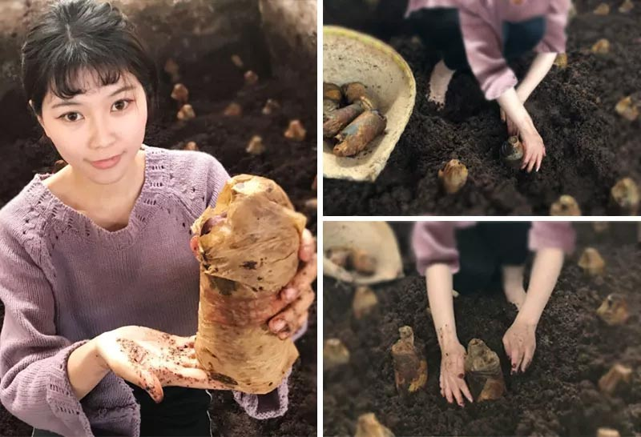
讲了这么多
相信你最关心的还是酒的质量
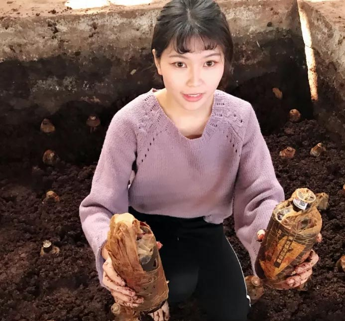
现场开一瓶尝尝！
酒糟恒温恒湿的环境
有利于酒体的呼吸作用
老熟陈香
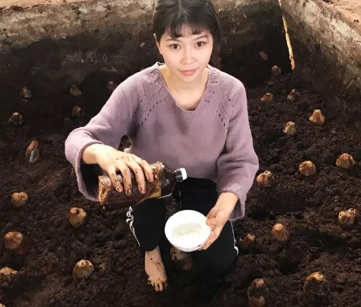
你看
酒线细长 酒花饱满 酒色微黄
经过埋藏，酒体已经变得很稠密了
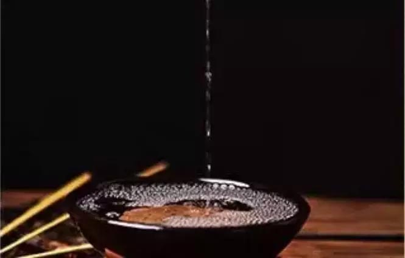
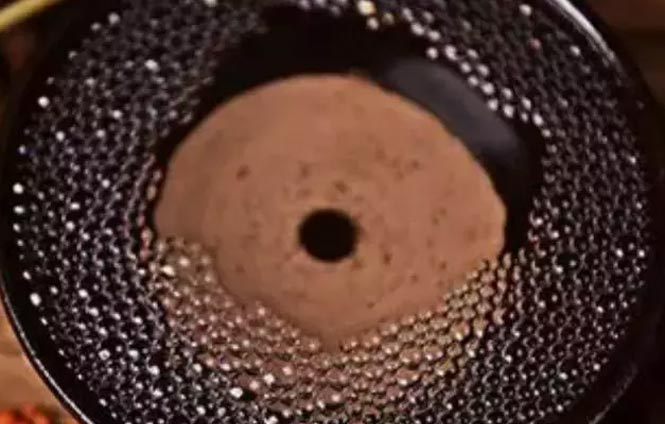
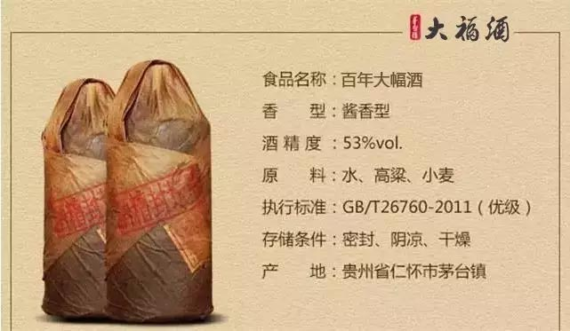
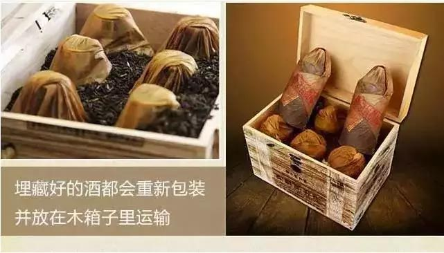
~藏好的老酒都会重新包装~
并放在木箱子里运输
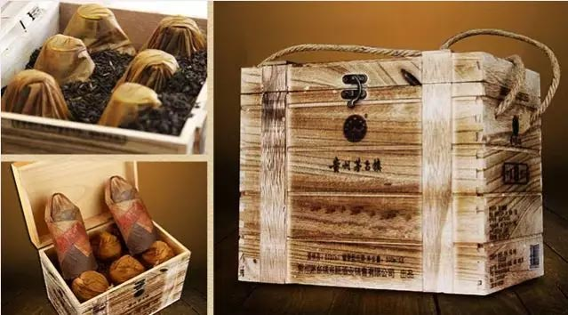